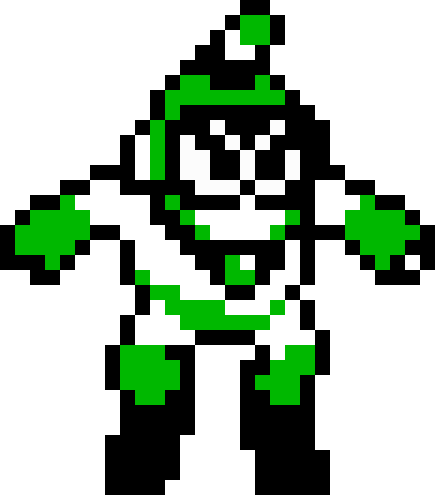
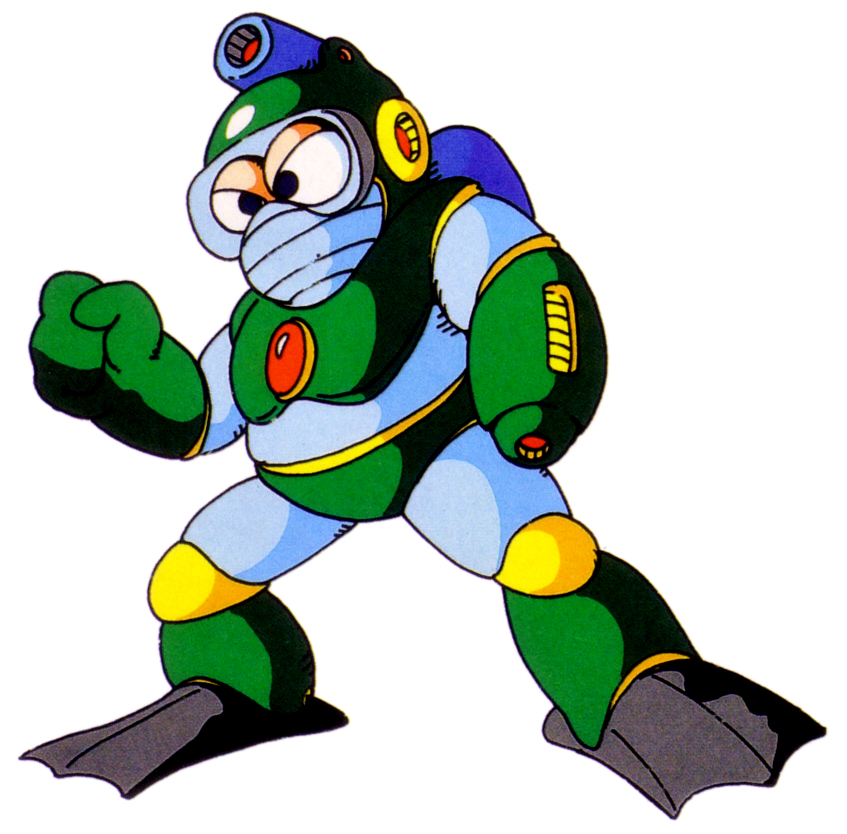

Tips to Beat the Boss
- Best Time to Attack: Hit him right after he lands from a jump. He pauses briefly before firing bubbles, giving you a clean window to shoot.
- Manage the Water Physics: The low-gravity water environment makes your jumps floaty. Keep your jumps short so you don’t drift into his bubbles or the ceiling spikes.
- The Positioning Trick: Stay on the ground as much as possible. Bubble Man tends to jump toward you, and grounded movement gives you better control to dodge both him and his projectiles.
- Weakness: The Metal Blade deals heavy damage and can hit him from multiple angles. It’s one of the fastest ways to shred his health bar.
- Pattern: He alternates between short hops and firing bubble projectiles that drift upward. His movement is predictable, but the bubbles can create clutter if you don’t clear them quickly.
- Start with Bubble Man: Many players choose him early because his stage is manageable and his weapon, the Bubble Lead, is useful for locating hidden floors and dealing steady damage to certain bosses.
- Jump Strategy: Avoid high jumps — the ceiling spikes are instant death. Use controlled hops only when necessary to dodge his bubbles.
- Stage Tips: Watch out for the robotic frogs and the shrimp enemies. The biggest threat is the spike-lined descent near the end; move slowly and drop carefully to avoid brushing against the spikes.